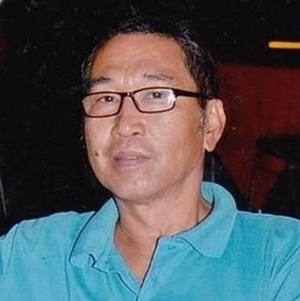

"Our mission in a span of 15 years, we endeavor: - to help families and business owners build their dreams by designing projects that are efficient, affordable, sustainable, and cost-effective; and the community by extending superior services towards expansion and reconstruction of powerplants; - to develop sincere and equal working relationship among the team and the clients by creating an atmosphere where families can experience the pride and satisfaction towards designing their dream houses ; - to be the regional market leader in providing design and building construction services."
Chineth Caday
President at C.T.Caday
"Our vision is to become a world-class design & construction company that provides affordable yet superior building construction services to every family and business-owners across all regions."
Wilson Caday
Vice President at C.T. Caday
FIND US ON SOCIAL MEDIA